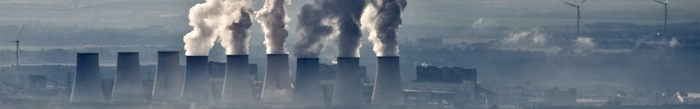
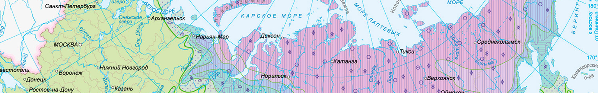
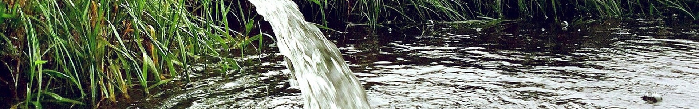
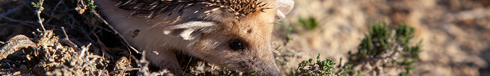

Сибирь: «сердце» российской промышленности
С каждым годом значение Сибири для нашей страны становится всё больше и больше. Её территория занимает около 59% площади России, на ней проживает свыше 37 миллионов человек. С начала XX века началось оформление её роли как важного промышленного региона, и сейчас вклад предприятий Сибири в экономику страны сложно переоценить.
На территории Сибири добывается (в процентах от общей добычи в стране):
‣ 85% свинца и платины
‣ 95% газа
‣ 71% никеля
‣ 89% нефти
‣ 69% меди
В энергетике роль Сибири не менее значима. Полноводные реки, например, Лена и Енисей, позволяют строить каскады мощнейших ГЭС. Строятся также тепловые и даже атомные электростанции («Академик Ломоносов», Билибинская). Выработка электроэнергии в год составляет сотни миллиардов киловатт-часов, и это не преувеличение. Такая выработка позволяет обеспечить электричеством каждый дом, вплоть до глухих отдалённых поселений в тайге.
Упоминая тайгу, нельзя не сказать о значении лесозаготовок, производимых в Сибири. Таёжные леса – источник древесины высшего сорта, использующейся как у нас в стране, так и экспортирующейся за рубеж. Современную Россию, её хозяйство и промышленность, невозможно представить без Сибири. С учётом перенаселения европейской части России, в будущем Сибирский и Дальневосточный федеральные округа вполне могут стать новыми центрами притяжения миграций внутри страны, что только повысит их значимость.
Главные экологические проблемы Сибири
Являясь средоточием чёрной и цветной металлургии, добывающей и химической промышленности, Сибирь неизбежно обзавелась огромным количеством экологических проблем. Экономика, разнообразие живых существ, качество жизни, смертность и рождаемость, естественные природные ландшафты – вот лишь малая часть того, что будет зависеть от разрешения или усугубления экологических проблем.
Хотя сейчас многие люди начали осознавать значение защиты природы, проблемы никуда не делись, и, более того, многие из них обладают накопительным эффектом. Вредя напрмую или косвенно, мы зачатую не задумываемся о последствии своих действий.

Чёрное небо
«Чёрное небо» – режим неблагоприятных метеоусловий (НМУ), вводимый во многих городах Сибири, играющих важную роль в промышленном производстве. В числе крупнейших сибирских городов, в которых часто вводится этот режим: Красноярск, Новокузнецк, Новосибирск, Омск, Улан-Удэ. Режим вводится, когда выбросы от предприятий города не могут в полной мере рассеиваться в атмосфере, поэтому накапливаются в приземном слое атмосферного воздуха. Из-за этого в городе возникает густой ядовитый смог.
Важно отметить, что режим «чёрного неба» характеризуется не только высокой концентрацией частиц PM2.5, но также и оксида углерода, диоксида серы, оксидов азота, летучих органических соединений тяжёлых металлов. Многие из этих веществ являются сильными канцерогенами, способны вызывать раздражение слизистых оболочек, заболевания лёгких. Тяжёлые металлы в больших дозах могут вызывать отравление, поражать нервную систему.

Таяние многолетней мерзлоты
Таяние многолетней мерзлоты опасно в связи с процессом накопления токсичных и радиоактивных веществ в грунтах. В настоящее время загрязнители в грунте находятся в законсервированном (мерзлом) состоянии, однако при деградации мерзлоты они вовлекутся в кругооборот живой природы, попав в Арктический и Тихоокеанский бассейны, разрушая при этом не только биоценозы Севера, но и экосистемы Мирового океана.
Токсичные вещества через пищевую цепочку организмов существенно ухудшат качество морепродуктов, скажутся на здоровье человека и на всей мировой экологии. Более того, помимо токсичных веществ будут высвобождены представляющие серьёзную опасность вирусы и бактерии, находящиеся под слоем вечной мерзлоты.

Загрязнение водоёмов
Проблема загрязнения, к сожалению, не становится менее актуальной, а наоборот, проявляется всё более явно с каждым годом. Помимо постоянного загрязнения продуктами промышленного производства, имеют место техногенные катастрофы, несущие непоправимый ущерб экологии. Ярким примером является разлив дизельного топлива в Норильске, произошедший 29 мая 2020 года, являющийся одной из крупнейших в истории страны экологических катастроф.
Наряду с промышленным загрязнением, большое влияние оказывают бытовые отходы, на сокращение которых повлиять может каждый из нас.

Сокращение видового многообразия
Ещё одной проблемой является сокращение видового многообразия растений и животных на территории Сибири, которое вызвано активным расширением хозяйственной деятельности в регионе. Согласно докладу Минприроды России, в тайге отстрел пушного зверя вдвое превышает допустимый максимум, что наносит непоправимый ущерб экосистемам, в которых сосредоточены ресурсы пушнины. Вообще, браконьерство является одной из главных причин сокращения видового многообразия Сибири.
Помимо браконьерства, одной из ключевых причин этой экологической проблемы является деградация мест обитания вследствие хозяйственного освоения, в первую очередь активной добычи полезных ископаемых, строительства объектов инфраструктуры. Также сильно влияет на сокращение видового многообразия загрязнение окружающей среды. Отходы от предприятий уничтожают почвы, губят растения. Гибель растений, в свою очередь, влечет гибель остальных животных, находящихся выше в пищевой цепи. Из-за деградации почв ареал обитания сокращается. Загрязнение рек промышленными отходами убивает животных, которые пьют воду из них.
Как защитить природу Сибири?
Что же делать, чтобы не допустить последствий, которые влекут за собой экологические проблемы? Сотни страниц проанализированных документов и изучение деятельности крупных предприятий и государства по охране окружающей среды помогло выработать методы для улучшения экологической ситуации, при этом без потери выработки производств.
1
Переносить заводы из котловин и других мест, где токсичные вещества не могут рассеиваться
2
Снабжать заводы автоматикой для уменьшения выработки при неблагоприятных метеоусловиях
3
Внедрять передовые технологии отечественного производства, например газоочистное оборудование
4
Применять технологии вторичной переработки производственных отходов
5
Переходить на более экологически чистые источники топлива, дающие меньшее количество вредных выбросов при сожжении
6
Увеличить строгость стандартов работы промышленных предприятий, в том числе ввести необходимость ежегодных публичных отчётов, усовершенствования технологий и оборудования